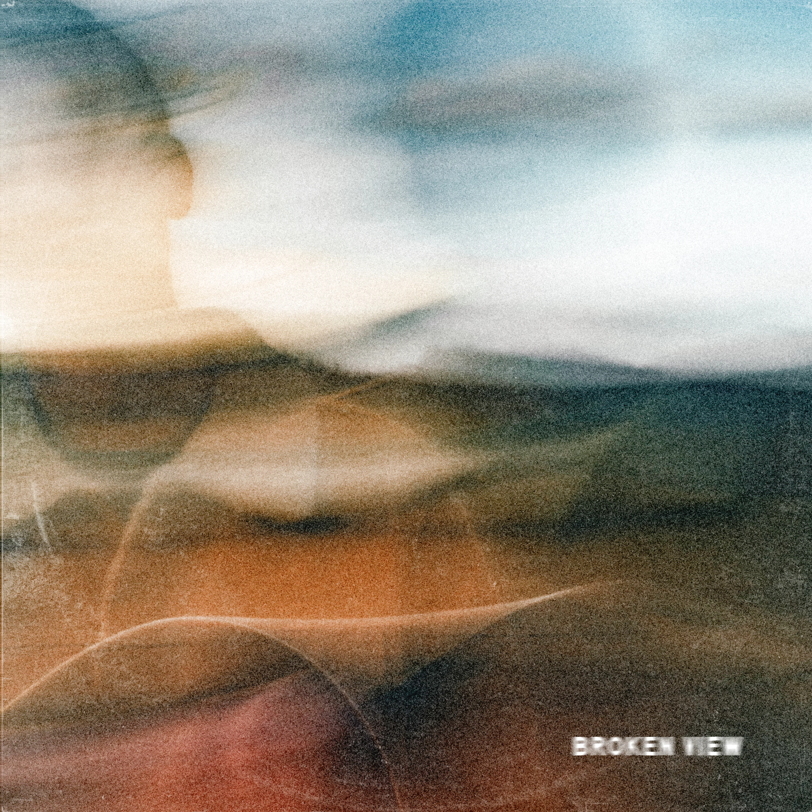

by Sam Barber
I was such a huge fan of Sam Barber's first album. In my opinion, it was pretty much a non-skip and I was grooving to so many of his singles and features on other country artist's tracks. This album was different in that it made me realize how one dimensional he is by himself. With half the tracks and no guest appearances, so many of these songs just morph into one another with the only difference being song title to divvy up the new release. That being said, I still am a fan of how his music sounds with the soulful voice leading the hard strummed guitar and a drum track that will vibrate your whole chest. Pretty obviously, my only gripe is how little variety there is here. My personal favorites from this album were Satellite, The More I Hope, and Run. Album was reviewed on April 7th, 2026.